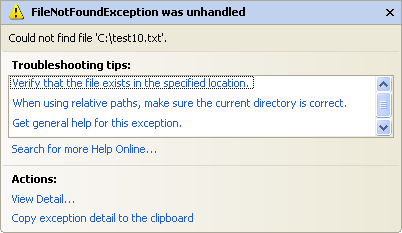

Runtime errors in VB .NET
This lesson is part of an ongoing tutorial. The first part is here: Design Time Errors
Runtime errors are a lot harder than Design Time errors to track down. As their name suggests, these errors occur when the programme is running. Runtime errors are the ones that crash your programme. A simple way to crash a programme is to divided by zero. Change the code for your button to this, and try it out:
Dim Num1 As Integer
Dim Num2 As Integer
Num1 = 10
Num2 = 0
TextBox1.Text = CInt(Num1 / Num2)
The CInt( ) part means Convert to an Integer. We're just making sure to convert the answer to the sum into a number. But run your programme and test it out. Click your button and see what happens.
What happens is that you'll get the following error message popping up in Visual Studio Express 2010:
In version 2012, you'll get the following error message (the 2010 version seems more helpful, and better designed):
Click the Break button, and then stop your programme from running.
When you try to divide by zero, VB.NET throws up the Overflow error message - there would be just too many zeros to go into the Integer variable type. Even if you change the Type into a Single or a Double, you'd still get the same error message. Programming environments just don't like you dividing a number by zero. If this were in a real programme, chances are it would crash, or "bug out". And you'll get the blame!
If you think the answer to a calculation could result in zero, you should check for this. We'll see how to write code to trap Runtime errors in a moment. But here's another example of one.
From the controls toolbox, add a RichTextBox control to your form. Change the Name property of your RichTextBox to rt1. A RichTextBox is just like a normal textbox but with more functionality. One of these extra functions is the ability to load a file directly. Delete or comment out any code you have for your button, and add the following line:
rt1.LoadFile("C:\test10.txt", RichTextBoxStreamType.PlainText)
However, if you are using Vista or windows 7 then change the file name above to this:
"C:\Users\Owner\Documents\test10.txt"
All the line does is to load (or try to) the text file called "test10.txt" into the RichTextBox. The second argument just specifies that the type of file we want to load is a Plain Text file.
Run your programme, and then click the button. If you don't have a text file
called "test10.txt" in the root folder of your C drive, you'll get
the following Runtime error message:

The additional information is quite useful this time. It's saying that the file "C:\test10.txt" could not be found. If the error occurred in a normal programme, it would shut down. Not something you want a programme to do in mid stream! But let's see how to deal with it.
In the next part we take a look at Try ... Catch in order to trap any errors in your code.